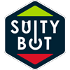
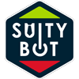
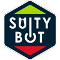
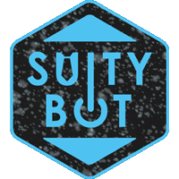
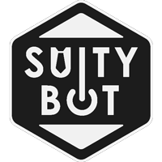
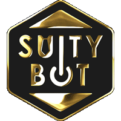

Suity Bot

- Category: Graphic Design
- Team Size: 1
- Year: 2022
Suity Bot is a Discord bot used by many RuneScape players. It's man purpose it to let players know of the last known prices of traded items in the most accurate way possible. They came to me in search of a rebrand for the bot and their discord server.
The Logo
Their old discord server's name and logo was "PCT", standing for "Price Check & Trade", and the bot had a picture of someone in a suit. I was asked to have the logo be round and simple, due to the shape and size at which this would be shown, and not revolve around a suit.
I decided to have the logo be hexagonal to have it be different from every other circular discord server icon, since it allows transparency. I included a tie as an element that was present in the old image as n egative space on the "U" in "Suity", and an ON button for the "O" in "Bot" or a mechanical cog, to give the idea of bot. The green and red arrows are there to remit to the prices going up and down. All of this is explained in the image below.
First client feedback presentation page
After chosing the first option, they wanted to see what we could do in regards to the size of the different elements. There wasn't much we could do for something that would be mainly displayed at 50px but I decided to bring the outline to the outer edge, giving more space for everything inside. We ended up going forward with the 4th option, seen below.
The different options in regards to element sizing.
Having the logo chosen, they let me know of all the elements and iterations they needed for this project, and they were as follows:
- 1 - Static base image
- 2 - Animated base image
- 3 - Banner for patreon
- 4 - Banner for discord
- 5 - "Dyed" variants of the logo
At this point we were pretty set on the static logo, so I moved on to the animated one.
When I was creating the logo, I had this idea of having numbers move up and down where "suity bot" is written, so mimick the animations from crypto sites, as the currency gets more or less valuable, but this wasn't ideal as they wanted something for the server and not only the bot, which was what I'd been told at the beginning. So we made something different, simple, that would work everywhere and wasn't tied to a specific function of the bot.



The first three iterations of the animated logo.
The final animated version, currently in use.
As for the banners, I presented them with these two, one for discord and one for patreon, which were all good except the big "Price Check & Trade". We then changed that to Suity Bot and moved the composition a bit due the name being shorter.
The banners for Discord and Patreon.
The background for the Discord invite screen.
Lastly, for the "dyed" variants of the logo, I had to animate them in a way that reflected their dye in-game for "Barrows", "Shadow", "Ice", "Third-age", and "Blood", and was then asked to make a Gold one and one inspired in sakura petals. The results were the following:



The banners for Discord and Patreon.